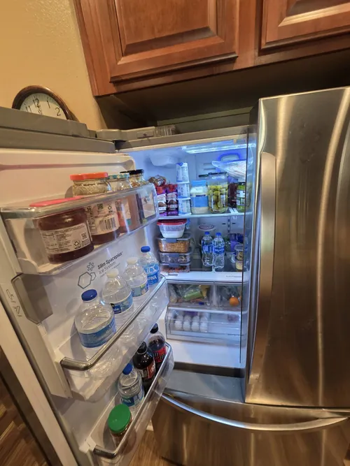

LG Refrigerator Repair: Understanding Linear Compressor Problems
One of the most important innovations in modern refrigeration technology is the linear compressor. Many LG refrigerators use this advanced system to improve energy efficiency, reduce operating noise, and maintain more consistent temperatures. While linear compressors offer several advantages compared to traditional compressor designs, they also introduce unique diagnostic and repair challenges. Understanding how these systems work can help homeowners recognize potential warning signs and make informed decisions when professional LG refrigerator repair becomes necessary.
A traditional refrigerator compressor operates by cycling on and off at fixed speeds. In contrast, a linear compressor is designed to adjust its operation based on cooling demand. Instead of constantly stopping and restarting, the compressor can modify its performance to maintain stable temperatures more efficiently. This design reduces energy consumption, minimizes temperature fluctuations, and helps preserve food quality by maintaining a more consistent cooling environment.
Although linear compressors are highly advanced, they remain part of a complex refrigeration system that includes sensors, control boards, evaporator fans, condenser components, refrigerant lines, and electronic communication systems. When cooling problems occur, homeowners often assume the compressor itself is responsible. However, many symptoms that appear to be compressor related may actually originate from other refrigerator components. This is one reason accurate diagnostics are such an important part of professional LG refrigerator repair.

One of the most common signs associated with linear compressor problems is inadequate cooling. Homeowners may notice that food is not staying cold, beverages feel warmer than normal, or freezer temperatures begin to rise unexpectedly. In some cases, cooling performance may decline gradually over several weeks before becoming more noticeable. Because cooling issues can have multiple causes, proper testing is essential before assuming the compressor has failed.
Unusual noises may also indicate developing refrigerator problems. While linear compressors are generally quieter than traditional designs, clicking sounds, excessive humming, buzzing, or changes in normal operating sounds may suggest a problem somewhere within the cooling system. These symptoms can sometimes be related to compressor operation, but they may also involve fan motors, relays, control systems, or other refrigerator components.
Another warning sign is excessive runtime. A refrigerator that seems to run continuously without reaching proper temperature may be experiencing cooling inefficiencies. Dirty condenser coils, airflow restrictions, refrigerant issues, sensor failures, or compressor related problems can all contribute to extended operating cycles. Professional LG refrigerator repair focuses on evaluating the entire cooling system to determine the underlying cause.
Electronic control systems play a major role in linear compressor performance. Modern LG refrigerators use advanced control boards and sensors to regulate compressor operation.
If these electronic components provide inaccurate information, cooling performance may suffer even when the compressor itself remains functional. This is why specialized diagnostics are necessary when troubleshooting modern refrigerator systems.Temperature fluctuations are another common symptom homeowners may encounter. Food freezing inside the refrigerator compartment, inconsistent cooling between shelves, or freezer temperatures that vary throughout the day can indicate problems affecting overall system performance. Because multiple refrigerator components influence temperature stability, identifying the exact source of the issue requires a systematic diagnostic approach.
Many homeowners wonder whether a refrigerator should be repaired or replaced when compressor related symptoms appear. The answer depends on several factors, including the age of the appliance, the overall condition of the cooling system, and the results of professional diagnostics. In many situations, accurate LG refrigerator repair can restore reliable performance and extend the useful lifespan of the appliance.
Preventive maintenance can also support long term compressor health. Keeping condenser coils clean, maintaining proper airflow around the refrigerator, replacing water filters as recommended, and addressing small cooling issues early may help reduce stress on cooling components. While maintenance cannot prevent every failure, it can improve overall refrigerator efficiency and reliability.
One of the biggest mistakes homeowners make is delaying service when cooling performance begins to change. Small issues often place additional strain on other refrigerator systems, increasing the likelihood of larger repairs later. Early diagnostics can help identify developing problems before they affect food storage, energy efficiency, and appliance reliability.
Professional LG refrigerator repair combines advanced diagnostics, technical expertise, and specialized testing procedures to evaluate modern linear compressor systems accurately. Whether your refrigerator is experiencing cooling problems, unusual noises, inconsistent temperatures, or extended operating cycles, proper diagnosis is the first step toward restoring dependable performance. Understanding how linear compressors function and recognizing potential warning signs can help homeowners protect their investment and keep their refrigerator operating efficiently for years to come.